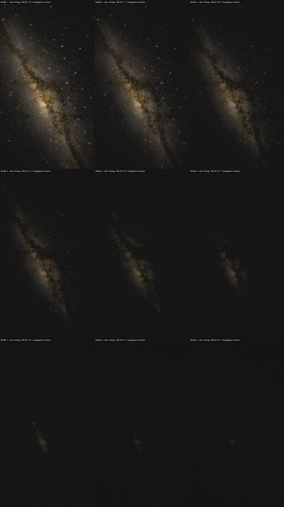
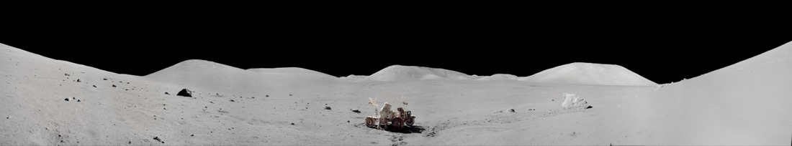
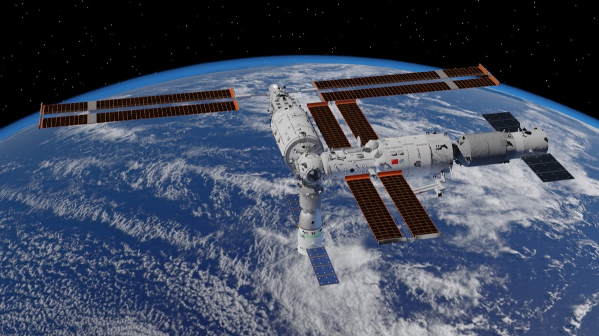

总提交
85个 commit

A Project Chronicle · 项目历程
从最早被鸭哥的项目击中，到把十几亿颗真实恒星，搬进一个谁都能打开的网页。
The spark
一切的起点，是刷到了 鸭哥（grapeot） 的那篇文章——《把 18 亿颗星星画在一张图上，能还原我们拍到的银河吗？》。
那种感觉很难说清。不是「哇好厉害」，而是被击中了：原来一个人可以拿欧空局 Gaia 卫星测出来的十几亿颗恒星的真实位置和亮度，一层一层地，把我们肉眼看到的那条银河，从数据里重新「显影」出来。
于是我把他的 gaia_allsky 仓库下载了回来，跟着一篇篇文章复现。那几天真的做出了东西：



但是。
复现归复现，我想做的其实是另一件事：一个谁都能打开、能自己拖动探索的星空网页。6 月 16 日我正式建了 cosmic-photo-explorer 这个仓库，还从鸭哥的文章里提炼出 7 个可复用的方法论。可真到要把它变成能用的产品那一步——
计划里假设能直接复用鸭哥那套「离线渲染」的管线，结果那条路根本走不通：渲染是给出海报的，不是给人实时拖动的。项目卡在这里，「Phase 1 完成」其实是虚的。6 月 23 日只留下一个安全备份快照，然后……就搁下了。一放，就是半个月。
The restart
7 月 2 日那个傍晚，趁着 Fable 重启，我决定把这个搁置了半个月的老计划捡回来。
这次想通了一件关键的事：别再自己离线渲染了。 天上的图，让专业的巡天服务实时给——用 CDS 的 Aladin Lite 加公共 HiPS 瓦片，直接把 ESA Gaia DR3 的真实全天图铺成一个能拖能缩的底图。
先做了个最小验证，证明这条路真能跑通。然后，一个晚上，39 个提交，整个产品活了过来：


当晚就第一次部署上线 GitHub Pages，README 里郑重写上了对鸭哥的致谢——是他把我领进门的。
The polish
上线只是开始。第二天一整天，是把它从「能看」磨到「像个正经产品」。
整站双语。 写了一套 i18n 引擎，主站和所有子页面全部中英一键切换。中途踩了两个坑——移动端按钮不显示、静态子页面脚本路径在子目录下加载不到——都一一修掉、分别上线。
太阳系升级成 3D。 画廊里的行星变成能 720° 旋转的球体；月球和火星更进一步，做成了站在地表的 360° 全景——真的像站在那片荒原上转一圈。




自托管迁移。 把 NASA 照片、3D 模型引擎全搬到本地，砍掉外部 CDN——万一哪天国内打不开，它照样能用。顺手把一张 15MB 的大图压到了 476KB。
3D 星座——我最喜欢的一块。 一个星座根本不是「一个东西」：北斗七星那七颗，其实散在几十到一百多光年的不同距离上，只是恰好从地球看过去连成了勺子。我把每颗星放到它真实的三维位置，站在地球看是勺子；镜头一转，勺子就散架了。先做了北斗，又用同样的方法加上猎户座、仙后座，配了切换器。

就在快收工的时候，出事了。主页那个可拖拽的银河大球卡死了——一碰整页锁死，按钮、滚轮全失灵，点了好几分钟才反应。
第一反应是押「静态银河秒开、想玩再点按钮」，做完直接被否——真实可交互的底图才是这个项目的灵魂，换成静态图等于把魂抽走了。而且按了按钮照样卡，说明根本没找到真凶。
回头重查，真凶是探测器轨迹带：5 条轨迹一共 16000 多个原始点，被当成实时折线，Aladin 每一帧都在主线程上重新投影、重新描一遍——主线程被彻底钉死，整页冻住。
根治：Douglas-Peucker 保形抽稀，背景常驻只剩约 231 个顶点，既不卡、又不糊。可交互星图，重新做回默认。
顺手还调好了探测器的播放：卫星贴身跟随镜头、按角距离匀速推进、播放时把卫星钉在画面正中消掉拖影。至于「我们在地球上其实看到的是螺旋轨迹」这件反直觉的事，改成了右边一张静态科普卡慢慢讲。当天反复上线七八次，直到最后一版。剩下的体验微调，都记进了 v2。
The meaning
半个月前，我把鸭哥的项目下载回来，却不会用。
现在，任何人打开这个网址，都能拖动一张十几亿颗真实恒星的星图，飞到火星地表转一圈，看北斗七星在眼前散架，中英文随手切换——而它是活的，是自己长出来的。
—— 一份写给这个项目的成长纪念 · 2026 年 7 月